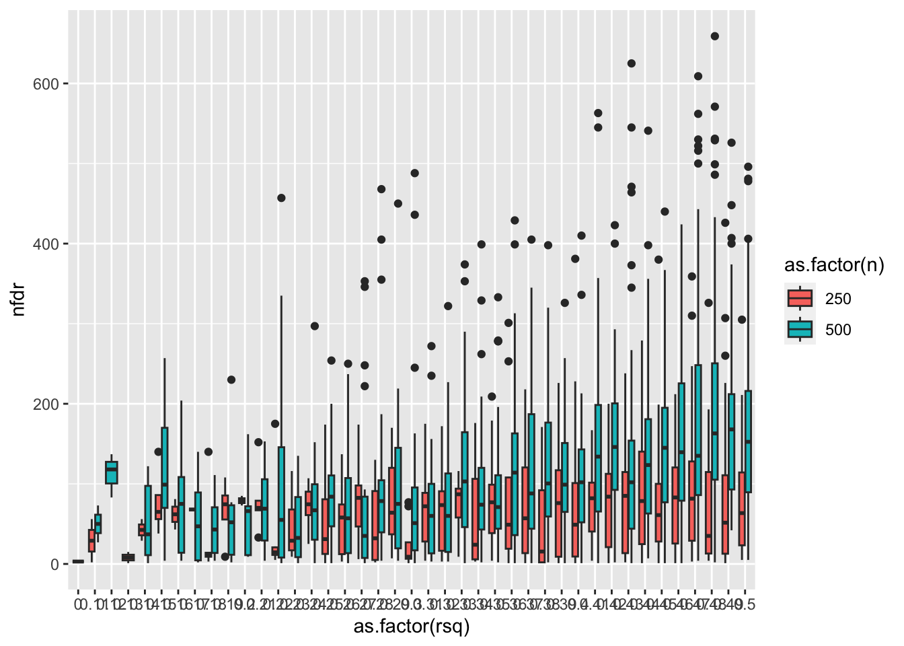

library(glue)
library(data.table)
library(dplyr)
library(ggplot2)Background
How sensitive is DRM to incomplete LD in more realistic scenarios? Take a region of 1000 genomes data and choose a SNP at random to have an additive effect of some determined magnitude. We’d now determine how many SNPs in the region (i.e. with incomplete LD with the causal SNP) have evidence of vQTL using DRM or SVLM. How does genetic effect size and sample size relate to minimum p-value and number of positions with FDR < 0.05.
test_drm <- function(g, y)
{
y.i <- tapply(y, g, median, na.rm=T)
z.ij <- abs(y - y.i[g+1])
summary(lm(z.ij ~ g))$coef %>%
as_tibble() %>%
slice(2) %>%
mutate(method="drm")
}
test_svlm <- function(g, y)
{
yres <- residuals(lm(y ~ g))^2
summary(lm(yres ~ g))$coefficients %>%
as_tibble() %>%
slice(n=2) %>%
mutate(method="svlm")
}Get some plink data - e.g. just 1-2k SNPs from 1000 genomes European samples
/Users/gh13047/Downloads/plink_mac_20230116/plink \
--bfile /Users/gh13047/repo/opengwas-api-internal/opengwas-api/app/ld_files/EUR \
--chr 22 \
--recode A \
--out eur22 \
--from-bp 0 --to-bp 17000000PLINK v1.90b7 64-bit (16 Jan 2023) www.cog-genomics.org/plink/1.9/
(C) 2005-2023 Shaun Purcell, Christopher Chang GNU General Public License v3
Logging to eur22.log.
Options in effect:
--bfile /Users/gh13047/repo/opengwas-api-internal/opengwas-api/app/ld_files/EUR
--chr 22
--from-bp 0
--out eur22
--recode A
--to-bp 17000000
16384 MB RAM detected; reserving 8192 MB for main workspace.
1734 out of 8550156 variants loaded from .bim file.
503 people (0 males, 0 females, 503 ambiguous) loaded from .fam.
Ambiguous sex IDs written to eur22.nosex .
Using 1 thread (no multithreaded calculations invoked).
Before main variant filters, 503 founders and 0 nonfounders present.
Calculating allele frequencies... 0%1%2%3%4%5%6%7%8%9%10%11%12%13%14%15%16%17%18%19%20%21%22%23%24%25%26%27%28%29%30%31%32%33%34%35%36%37%38%39%40%41%42%43%44%45%46%47%48%49%50%51%52%53%54%55%56%57%58%59%60%61%62%63%64%65%66%67%68%69%70%71%72%73%74%75%76%77%78%79%80%81%82%83%84%85%86%87%88%89%90%91%92%93%94%95%96%97%98%99% done.
Total genotyping rate is in [0.9999995, 1).
1734 variants and 503 people pass filters and QC.
Note: No phenotypes present.
--recode A to eur22.raw ... 0%1%2%3%4%5%6%7%8%9%10%11%12%13%14%15%16%17%18%19%20%21%22%23%24%25%26%27%28%29%30%31%32%33%34%35%36%37%38%39%40%41%42%43%44%45%46%47%48%49%50%51%52%53%54%55%56%57%58%59%60%61%62%63%64%65%66%67%68%69%70%71%72%73%74%75%76%77%78%79%80%81%82%83%84%85%86%87%88%89%90%91%92%93%94%95%96%97%98%99%done.Read in genotype data
geno <- fread("eur22.raw")
fam <- geno[,1:6]
geno <- as.matrix(geno[,-c(1:6)])
geno[1:10,1:10] rs587616822_G rs62224609_C rs4965031_A rs587646183_C rs139918843_C
[1,] 0 0 1 0 0
[2,] 0 1 0 0 0
[3,] 0 1 0 0 0
[4,] 0 0 0 0 0
[5,] 0 0 0 0 0
[6,] 0 1 0 0 0
[7,] 0 0 1 0 0
[8,] 0 0 0 0 0
[9,] 0 1 0 0 0
[10,] 0 0 1 0 0
rs376238049_T rs200777521_A rs587701155_A rs80167676_T rs915675_A
[1,] 0 0 0 0 1
[2,] 1 0 0 0 1
[3,] 1 0 0 0 1
[4,] 0 0 0 0 0
[5,] 0 0 0 0 0
[6,] 1 0 0 0 1
[7,] 0 0 1 0 1
[8,] 0 0 0 0 1
[9,] 0 1 0 1 0
[10,] 0 0 0 0 0dim(geno)[1] 503 1734cormat <- cor(geno)
dim(cormat)[1] 1734 1734fast_assoc <- function(y, x)
{
index <- is.finite(y) & is.finite(x)
n <- sum(index)
y <- y[index]
x <- x[index]
vx <- var(x)
bhat <- stats::cov(y, x)/vx
ahat <- mean(y) - bhat * mean(x)
rsq <- (bhat * vx)^2/(vx * var(y))
fval <- rsq * (n - 2)/(1 - rsq)
tval <- sqrt(fval)
se <- abs(bhat/tval)
p <- stats::pf(fval, 1, n - 2, lower.tail = FALSE)
return(list(ahat = ahat, bhat = bhat, se = se, fval = fval, pval = p, n = n))
}
test_drm <- function(g, y)
{
y.i <- tapply(y, g, median, na.rm=T)
z.ij <- abs(y - y.i[g+1])
fast_assoc(z.ij, g) %>% as_tibble()
}
sim_full <- function(rsq, geno, n, cormat)
{
i <- sample(1:ncol(geno), 1)
y <- as.numeric(scale(geno[,i])) * sqrt(rsq) + rnorm(nrow(geno), 0, sqrt(1-rsq))
res <- lapply(1:ncol(geno), function(i)
{
test_drm(geno[1:n,i], y[1:n])
}) %>% bind_rows() %>% mutate(snp=1:n(), ldrsq=cormat[i,]^2)
return(res)
res %>%
mutate(fdr = p.adjust(pval, "fdr")) %>%
summarise(
vqtl = which.min(pval),
minp = min(pval, na.rm=T),
nfdr = sum(fdr < 0.05, na.rm=T),
vqtl_ldrsq = ldrsq[vqtl]
) %>%
mutate(rsq = rsq, n = n, qtl=i, af=sum(geno[,i])/(2*nrow(geno))) %>%
ungroup()
}
set.seed(1234)
o <- sim_full(0.5, geno, 500, cormat)
o %>% ggplot(., aes(x=ldrsq, y = -log10(pval))) +
geom_point() +
geom_smooth()`geom_smooth()` using method = 'gam' and formula = 'y ~ s(x, bs = "cs")'Determining spurious effects
Test DRM on each SNP in region for varying sample sizes and additive variance explained in the region
Simulation here: https://github.com/explodecomputer/mz-gwas/blob/main/scripts/drm_sims.r
load(url("https://github.com/explodecomputer/mz-gwas/raw/main/scripts/drm_sims.rdata"))
ggplot(res %>% filter(minp < 5e-8), aes(x=as.factor(rsq), y=nfdr)) +
geom_boxplot(aes(fill=as.factor(n)))
ggplot(res %>% filter(minp < 5e-8), aes(x=as.factor(rsq), y=-log10(minp))) +
geom_boxplot(aes(fill=as.factor(n)))ggplot(res %>% filter(minp < 5e-10), aes(x=af, y=vqtl_ldrsq)) +
geom_point()Summary
- SVLM and DGLM suffer equally from the issue
- The problem is likely a function of F statistic and LD - i.e. as sample sizes get larger, smaller effects additive become more relevant
- With n=500 additive effect of rsq = 0.1 is enough to generate a spurious significant vQTL
unlink("eur22*")sessionInfo()R version 4.2.3 Patched (2023-03-15 r84020)
Platform: aarch64-apple-darwin20 (64-bit)
Running under: macOS Monterey 12.6.2
Matrix products: default
BLAS: /Library/Frameworks/R.framework/Versions/4.2-arm64/Resources/lib/libRblas.0.dylib
LAPACK: /Library/Frameworks/R.framework/Versions/4.2-arm64/Resources/lib/libRlapack.dylib
locale:
[1] en_GB.UTF-8/en_GB.UTF-8/en_GB.UTF-8/C/en_GB.UTF-8/en_GB.UTF-8
attached base packages:
[1] stats graphics grDevices utils datasets methods base
other attached packages:
[1] ggplot2_3.4.0 dplyr_1.0.10 data.table_1.14.2 glue_1.6.2
loaded via a namespace (and not attached):
[1] pillar_1.8.1 compiler_4.2.3 tools_4.2.3 digest_0.6.31
[5] lattice_0.20-45 nlme_3.1-162 jsonlite_1.8.4 evaluate_0.19
[9] lifecycle_1.0.3 tibble_3.1.8 gtable_0.3.1 mgcv_1.8-42
[13] pkgconfig_2.0.3 rlang_1.0.6 Matrix_1.5-3 cli_3.5.0
[17] DBI_1.1.3 yaml_2.3.6 xfun_0.36 fastmap_1.1.0
[21] withr_2.5.0 stringr_1.5.0 knitr_1.41 generics_0.1.3
[25] vctrs_0.5.1 htmlwidgets_1.5.4 grid_4.2.3 tidyselect_1.2.0
[29] R6_2.5.1 fansi_1.0.3 rmarkdown_2.16 farver_2.1.1
[33] magrittr_2.0.3 scales_1.2.1 htmltools_0.5.4 splines_4.2.3
[37] assertthat_0.2.1 colorspace_2.0-3 labeling_0.4.2 utf8_1.2.2
[41] stringi_1.7.8 munsell_0.5.0